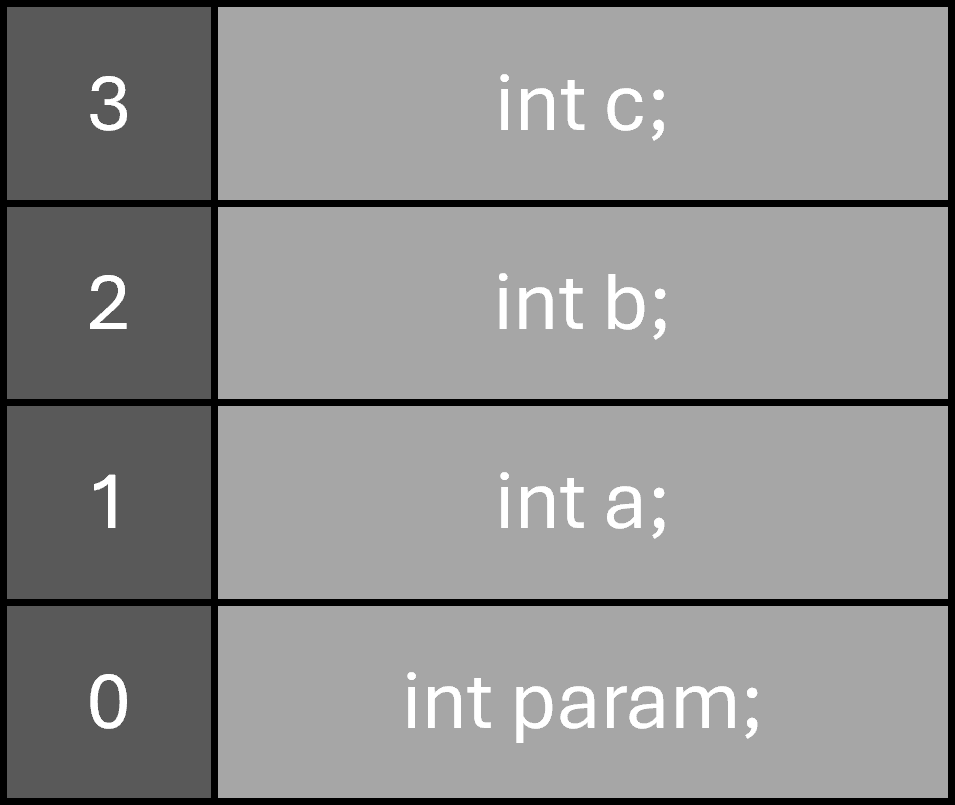

Pointer
In C++ ist ein Pointer (auf Deutsch: Zeiger) eine spezielle Variable, die nicht einen normalen Wert (wie eine Zahl oder einen Buchstaben) speichert, sondern die Speicheradresse einer anderen Variable im Arbeitsspeicher (RAM).
Speicheradressen und der Adress-Operator (&)
Jede Variable, die im Programm deklariert wird, belegt einen bestimmten Bereich im Arbeitsspeicher. Dieser Speicherbereich besitzt eine eindeutige Adresse(meist in Hexadezimaldarstellung angegeben)
- Mit dem Adress-Operator (&) lässt sich die Speicheradresse einer Variable ermitteln
#include <iostream> int main() { int a = 19; //Gibt den gespeicherten Wert der Variable a aus (z. B. 19) std::cout << a << std::endl; //Gibt die Speicheradresse der Variable a im RAM aus (z. B. 0x7ffd5b8e4a2c) std::cout << &a << std::endl; return 0; }
Pointer deklarieren und initialisieren
- Ein Pointer speichert die Adresse einer Variable, um später auf diese zugreifen zu können
- Ein Pointer wird deklariert, indem ein Sternchen(*) an den Datentyp angehängt wird (z.B.: int*)
- Der Datentyp des Pointers muss immer mit dem Datentyp der Variable deren Adresse er speichert übereinstimmen (eine int Variable erfortert einen int* Pointer)
- Deklarieren und Zuweisen einer Adresse: Datentyp* PointerName = &Variable;
#include <iostream> int main() { int a = 19; //Pointer speichert die Adresse von a int* ptr = &a; //Gibt die im Pointer gespeicherte Adresse aus (entspricht &a) std::cout << ptr << std::endl; return 0; }
Pointer dereferenzieren
- Um den Wert auszulesen, der sich an der Adresse befindet, die der Pointer speichert oder diesen Wert zu verändern, muss der Pointer dereferenziert werden
- Um einen Pointer zu dereferenzieren muss man vor den Pointer-Namen ein * setzen (z.B.: *ptr)
#include <iostream> int main() { int a = 19; int* ptr = &a; //Dereferenzierung: Liest den Wert an der Adresse aus (gibt 19 aus) std::cout << *ptr << std::endl; //Wert direkt über den Pointer im Speicher verändern *ptr = 42; std::cout << *ptr << std::endl; //Gibt 42 aus //Da ptr auf a zeigt, hat sich auch der Wert von a geändert: std::cout << a << std::endl; //Gibt 42 aus return 0; }
Der Null-Pointer (nullptr)
- Wird ein Pointer deklariert, ohne ihm eine adresse zuzuweisen (int ptr*;), erhält er einen zufälligen Speicherinhalt (eine sogenannte Garbage-Adresse). Ein Schreib- oder Lesezugrifff auf einen solchen uninitialisierten pointer führt zu unvorhergesehenem Verhalten oder zum Absturz den Programms.
- Das Schlüsselwort nullptr wird verwendet um explizit zu kennzeichnen, dass ein Pointer auf keine gültige Adresse zeigt
#include <iostream> int main() { //Ein Pointer, der aktuell auf nichts zeigt int* ptr = nullptr; //Vor dem Dereferenzieren immer prüfen, ob der Pointer gültig ist! if(ptr != nullptr) { std::cout << *ptr << std::endl; } else { std::cout << "Pointer zeigt auf keine gültige Adresse!" << std::endl; } return 0; }
Pointer auf Arrays und C-Style Strings
In C++ besteht eine Direkte Beziehung zwischen Pointern und Arrays. Der Name eines Arrays verhält sich in den meisten Kontexten wie ein Pointer auf das erste Element des Arrays.
#include <iostream> int main() { int zahlen[3] = {10, 20, 30}; //Der Array-Name 'zahlen' liefert die Adresse des ersten Elements (&zahlen[0]) int* ptr = zahlen; //Zugriff auf das erste Element über Dereferenzierung (Index 0) std::cout << *ptr << std::endl; //Gibt 10 aus //Pointer-Arithmetik: Verschiebt den Pointer gedanklich um 1 Element weiter im Speicher std::cout << *(ptr + 1) << std::endl; //Gibt 20 aus std::cout << *(ptr + 2) << std::endl; //Gibt 30 aus return 0; }
Ein klassischer C-Style String ist eine Abfolge(Array) von Zeichen (char), die im Speicher mit einem Null-Zeichen ('\0') abgeschlossen wird. Dieses Array wird über einen Pointer auf das erste Zeichen repräsentiert:
#include <iostream> int main() { //Pointer zeigt auf das erste Zeichen 'H' im Speicher const char* text = "Hallo"; //Auslesen des ersten Zeichens über Dereferenzierung std::cout << *text << std::endl; //Gibt 'H' aus //Auslesen des zweiten Zeichens über Pointer-Arithmetik std::cout << *(text + 1) << std::endl; //Gibt 'a' aus //Wird der Pointer direkt an std::cout übergeben, wird der gesamte String gedruckt std::cout << text << std::endl; //Gibt "Hallo" aus return 0; }
Pointer auf Pointer (Doppel-Pointer)
Da ein Pointer selbst eine Variable ist, belegt er ebenfalls Speicherplatz und besitzt eine eigene Speicheradresse. Ein Pointer auf einen Pointer speichert somit die Adresse einer Pointer-Variable. Er wird mit zwei Sternchen (int**) deklariert.
#include <iostream> int main() { int a = 100; //ptr1 speichert die Adresse von a int* ptr1 = &a; //ptr2 speichert die Adresse von ptr1 int** ptr2 = &ptr1; //Werte auslesen: std::cout << a << std::endl; //100 (Wert von a) std::cout << *ptr1 << std::endl; //100 (Einfache Dereferenzierung: Liest a über ptr1) std::cout << **ptr2 << std::endl; //100 (Doppelte Dereferenzierung: Liest a über ptr2 -> ptr1) //Adressen ausgeben: std::cout << ptr1 << std::endl; //Gibt die Speicheradresse von a aus std::cout << ptr2 << std::endl; //Gibt die Speicheradresse von ptr1 aus return 0; }
Referenzen (Aliase)
In C++ ist eine Referenz ein alternativer Name (ein Alias) für eine bereits existierende Variable. Sobald eine Referenz erstellt wurde, verhält sie sich syntaktisch exakt wie die ursprüngliche Variable selbst. Jede Änderung an der Referenz ändert direkt den Wert der Originalvariablen, da beide denselben Speicherbereich repräsentieren.
Referenzen deklarieren & initialisieren (&)
- Eine Referenz wird deklariert, indem ein Kaufmanns-Und & (Ampersand) an den Datentyp angehängt wird (z. B. int&)
- Im Gegensatz zu Pointern müssen Referenzen zwingend direkt bei der Deklaration mit einer bereits existierenden Variablen initialisiert werden
- Deklarieren einer Referenz: Datentyp& ReferenzName = OriginalVariable;
#include <iostream> int main() { int alter = 25; //refAlter ist ab sofort ein Alias für die Variable alter int& refAlter = alter; return 0; }
- Bei einer Deklaration (int& ref = a;) gehört das & zum Datentyp und kennzeichnet die Variable als Referenz
- Bei einer Zuweisung/Auswertung (int* ptr = &a;) ist das & der Adress-Operator, der die Speicheradresse für einen Pointer liefert.
Im Gegensatz zu Pointern benötigen Referenzen keinen Dereferenzierungs-Operator (*), um an den Wert zu gelangen. Man liest und überschreibt sie exakt so wie eine ganz normale Variable.
#include <iostream> int main() { int a = 10; int& ref = a; //Wert über die Referenz verändern ref = 42; //Da ref und a denselben Speicherplatz repräsentieren, ändert sich a direkt mit //refAlter ist ab sofort ein Alias für die Variable alter int& refAlter = alter; return 0; }
Referenzen sind speichersicherer und oft einfacher zu lesen als Pointer, unterliegen aber strengen compilerseitigen Regeln:
- Keine uninitialisierten Referenzen: Der Code int& ref; führt sofort zu einem Compiler-Fehler.
- eine Null-Referenzen: Eine Referenz muss immer auf ein gültiges, existierendes Objekt zeigen. Ein Äquivalent zum nullptr gibt es bei Referenzen nicht.
- Kein Umbiegen möglich (Re-Seating): Sobald eine Referenz an eine Variable gebunden ist, bleibt sie für ihre gesamte Lebensdauer an diese gebunden. Weist man ihr eine andere Variable zu, wird nur der Wert kopiert, die Referenz wird dabei nicht auf die andere Variable umgeleitet.
Eine const-Referenz ist ein Alias für eine Variable, der nur Lesezugriff (Read-Only) gewährt. Dies wird in C++ extrem häufig genutzt (insbesondere bei Funktionen), um große Datenstrukturen effizient zu übergeben. Durch die Referenz wird verhindert, dass der Datensatz aufwendig im Speicher kopiert werden muss (wie es bei normaler Variablenübergabe der Fall wäre), und durch das const wird gleichzeitig garantiert, dass die Originaldaten nicht versehentlich verändert werden.
Stack vs. Heap
Stack und Heap sind zwei unterschiedliche Varianten um Daten in der Memory(RAM) eines Computers zu Speichern.
Stack
Ein Stack (oder auch Stapel) ist die eifnachste Variante, Daten in der Memory zu speichern. Wird beispielsweise eine Funktion berechne definiert, die eigene Variablen enthält, werden diese auf einen Stapel gelegt. Dieser Stapel gehört dann zur Funktion. Wenn die Funktion endet, werden die Variablen innerhalb der Funktion nacheinander vom Stapel gelöscht. Der Stapel funktioniert nach dem Prinzip: last in - first out. Man kann ihn sich wie einen Stapel von Tellern vorstellen, man kann oben immer einen Teller auflegen und den obersten Teller einfach entfernen, entfernt man den untersten Teller zuerst, würde der gesamte Stapel umfallen. Der Stapelspeicher wird vom Compiler automatisch verwaltet. Stapelspeicher sind extrem schnell, aber in ihrer Größe begrenzt.

void berechne(int param) { int a; int b; int c; }
Auf dem Stapel befinden sich nicht nur Variablen, Parameter und Rückgabewerte einer Funktion, das System speichert dort auch die Adresse, an die es zurückspringen muss, wenn eine Funktion endet.
Heap
Will man selber definieren, wie lange Daten in der Memory gespeichert beliben muss man sie dynamisch mit new erstellen (Haufenspeicher). Dadurch werden diese Daten auf dem Heap gespeichert. new Liefert einen Zeiger zurück, der auf den Speicherbereich der Daten verweist. Dieser Speicherbereich wird irgendwo in der Memory vom Betriebssystem festgelegt. Das fürht dazu, das das Speichern der Daten länger dauert, es ist dafür flexibler. Es gibt keine Begrenzugne für die Größe der der Daten. Alles was auf den Heap mit new gespeichert wird, wird nicht automatisch verwaltet, es muss explizit mit delete wieder gelöscht werden, sonst wird der Speicherbereich erst nach Programmende wieder freigegeben.
void berechne() { int* ptr = new int(12); //Speichert einen neuen int im Heap mit dem Wert 12 delete ptr; //explizit Löschen }
Vector
Ein std::vector in C++ ist ein dynamisches Array aus der Standardbibliothek, das seine Größe automatisch anpassen kann, wenn Elemente hinzugefügt oder entfernt werden. Im Gegensatz zu herkömmlichen C-Arrays müssen Sie die Größe nicht zur Kompilierzeit kennen. Die Elemente werden in einem zusammenhängenden Speicherbereich abgelegt, was einen extrem schnellen, direkten Zugriff über Indizes erlaubt.
- Um std::vector zu nutzen, muss die Header-Datei <vector> eingebunden werden
#include <iostream> #include <vector> int main() { //1. Initialisierung eines Vektors mit 3 Zahlen std::vector<int> zahlen = {10, 20, 30}; //2. Element am Ende hinzufügen zahlen.push_back(40); //3. Zugriff auf Elemente std::cout << "Erstes Element: " << zahlen[0] <<; // Ohne Prüfung ob index auch zum Array gehört oder schon den Speicherbereich des Arrays übertritt std::cout << "Zweites Element: " << zahlen.at(1) <<; //Ist sicherer (wirft Fehler bei ungültigem Index) }
- Die Methode .clear() löscht alle Elemente aus dem Vector
- .size() gibt die Anzahl der Elemente im Vector zurück
- .capacity() gibt an, wie viele Elemente in den bereits reservierten Speicher passen, ohne dass neuer Speicher vom Betriebssystem angefordert werden muss
Pass by Value vs. Pass by Reference
Pass by Value
Pass by Value ist die klassische Übergabe von Parametern an eine Funktion, hierbei werden die Übergabewerte in die Parameter der funktion kopiert. Die Funktion erhält eine Kopie des übergebenen Arguments. Änderungen in der Funktion betreffen nur die Kopie. Hier ein Beispiel:
#include <iostream> void modifyValue(int x) { x = 100; //Ändert nur die lokale Kopie } int main() { int var = 5; modifyValue(var); std::cout << var; //Ausgabe: 5 (Original bleibt unverändert) return 0; }
- Pass by Value ist schneller bei kleinen Datentypen
- Haupteinsatzzweck sind Primitive Typen (int, double, char), wenn Daten geschützt bleiben sollen.
Pass by Reference
Im Unterschied dazu kann durch Pass by Reference die Funktion direkt den Original-Wert verändern. Die Funktion erhält einen Alias (eine Referenz / die Speicheradresse) des Originals. Änderungen in der Funktion verändern das Original. Hier ein Beispiel:
#include <iostream> void modifyValue(int &x) { x = 100; //Ändert das Originalobjekt im Speicher } int main() { int var = 5; modifyValue(var); std::cout << var; //Ausgabe: 100 (Original wurde verändert!) return 0; }
- Pass by Reference ist schneller bei großen Objekten, da kein Kopieraufwand entsteht.
- Haupteinsatzzweck ist wenn Werte modifiziert werden sollen oder für große Objekte
Pass by Pointer
Mit Pass by Pointer übergibt man einer Funktion die Speicheradresse einer Variable. Hier ein Code-Beispiel:
#include <iostream> void modifyValue(int* ptr) { if(ptr != nullptr) { *ptr = 100; //Ändert den Wert an der Speicheradresse } } int main() { int var = 5; modifyValue(&var); std::cout << var; //Ausgabe: 100 (Original wurde verändert!) return 0; }
- Pass by Pointer sollte man verwenden, wenn man Optionale Argumente verwendet (nullptr): Eine Referenz muss immer auf ein existierendes Objekt verweisen. Ein Pointer dagegen kann nullptr (Nullzeiger) sein. Wenn Ihre Funktion also auch "nichts" akzeptieren soll, ist ein Pointer ideal
- C-Kompatibilität: Wenn Sie Code schreiben, der mit alten C-Bibliotheken interagieren muss, muss man manchmal Pass by Pointer verwenden, da reines C keine Referenzen kennt.
const Pointer & const Reference
Will man Pass by Reference oder Pass by Pointer für große Objekte verwenden, diese aber vor veränderung schützen, kann man einen const Pointer oder eine const Reference verwenden.
#include <iostream> #include <vector> //const reference: Effizient, da keine Kopie erzeugt wird. Sicher, da schreibgeschützt. void printVector(const std::vector<int> &vec) { //vec.push_back(10); //COMPILER-FEHLER! Modifikationen sind verboten. for(int val = 0; val < vec.size(); val++) { std::cout << vec[val] << std::endl; } } //const pointer: void printValue(const int* ptr) { //*ptr = 20; // COMPILER-FEHLER: Der Wert hinter dem Zeiger ist schreibgeschützt. if(ptr != nullptr) { std::cout << *ptr; } } int main() { std::vector<int> zahlen = {10, 20, 30}; printVector(zahlen); int var = 5; printValue(&var); return 0; }